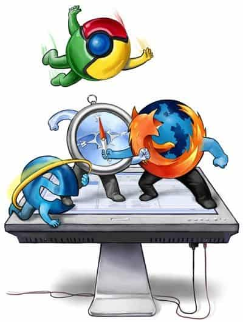

#1st Blog
Today I learned some spicy internet history.
So, allow me to take you on a roller-coaster that is the browser wars. In the 1990's the web was a mess and extremely hard to navigate. But a group of students in the University of Illinois planned to change that for everyone. They created Mosaic, the building blocks of the first ever internet browser. Unfortunately, since they used the University of Illinois resources to build Mosaic, the university owned the whole project. Therefore, the students, once graduated, made a brand new company built off the original ideas of Mosaic. However, they were not allowed to use any of the old work that they had done on Mosaic, but rather start again from scratch in order to make the Netscape browser. Mosaic was the practice run before the real show started. So, like that, the browser was born! It was easily accessible, great to navigate, and opened whole new world for the user.
This was new and profitable technology, and a big fish in the pond wanted a slice of the action - Microsoft came out with Internet Explorer. This browser was not only new competition for Netscape, but was also built off the Mosaic original source code. Since the University of Illinois owned the rights to Mosaic, Microsoft approached them and bought the source code so they could try and compete against Netscape to be the best browser. Internet explorer was built into Windows operating system allowing anyone with windows to, by default, have the Internet Explorer browser - taking Netscape down. In the end Microsoft ruined Netscape but Netscape didn’t let them off that easily, releasing their source code to the world allowing for many more browsers to rise and compete against Internet Explorer. One of which being Google Chrome, that became the worlds top browser in 2015. 